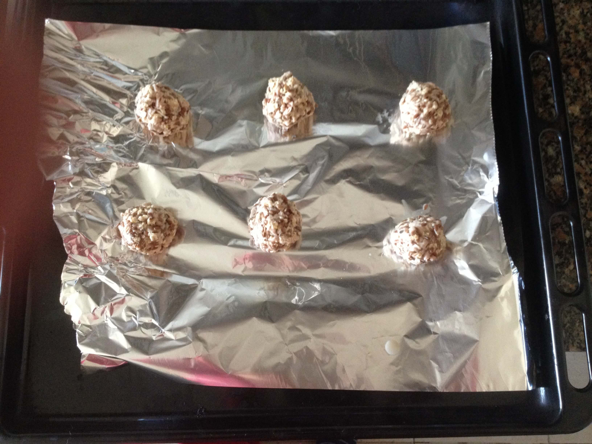
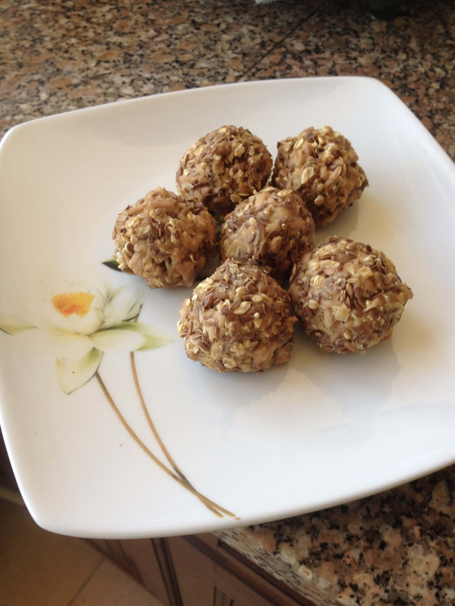

Mais uma receita saudável, muito fácil e que é excelente para levar na marmita.
Então cá vai:
- 1 Lata de Atum em Água
- 30 gramas de aveia
- 20 gramas de linhaça
- 30 gramas de claras
Misturar tudo com um garfo e fazer bolinhas. Vai ao forno durante 10 min a 180 graus.

